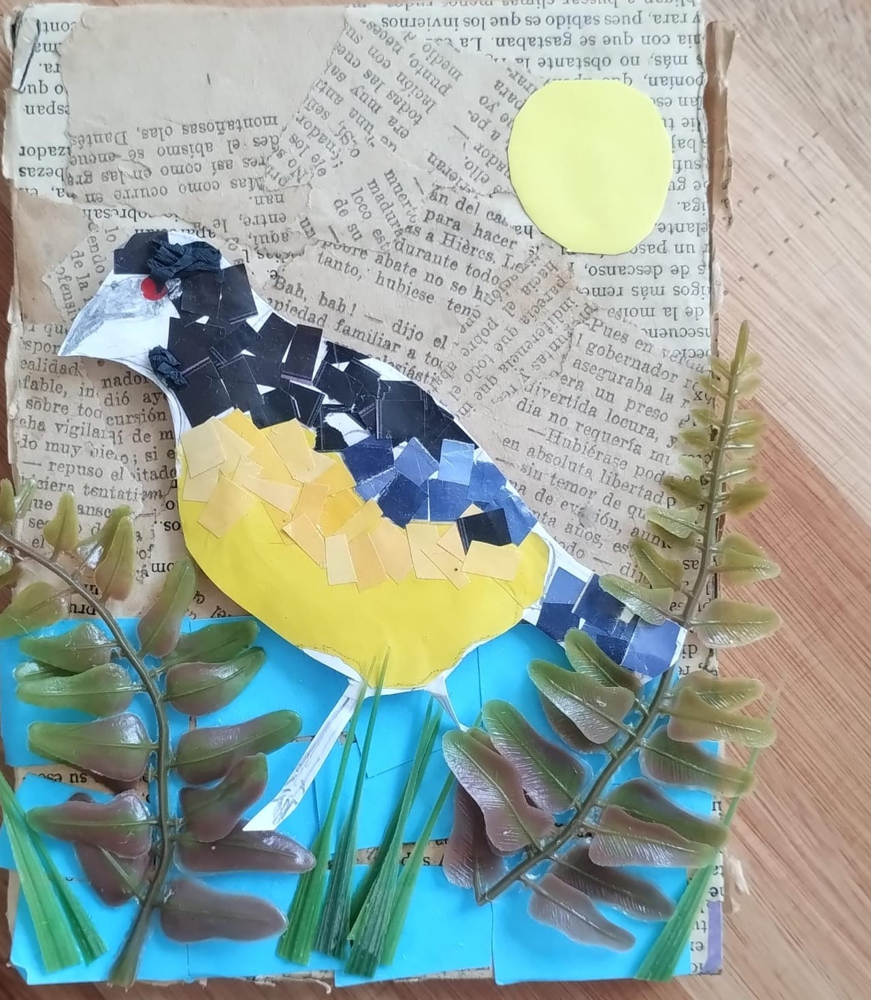
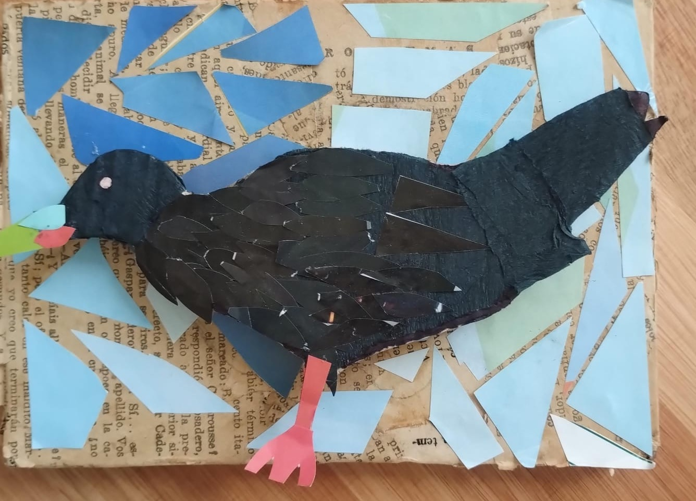
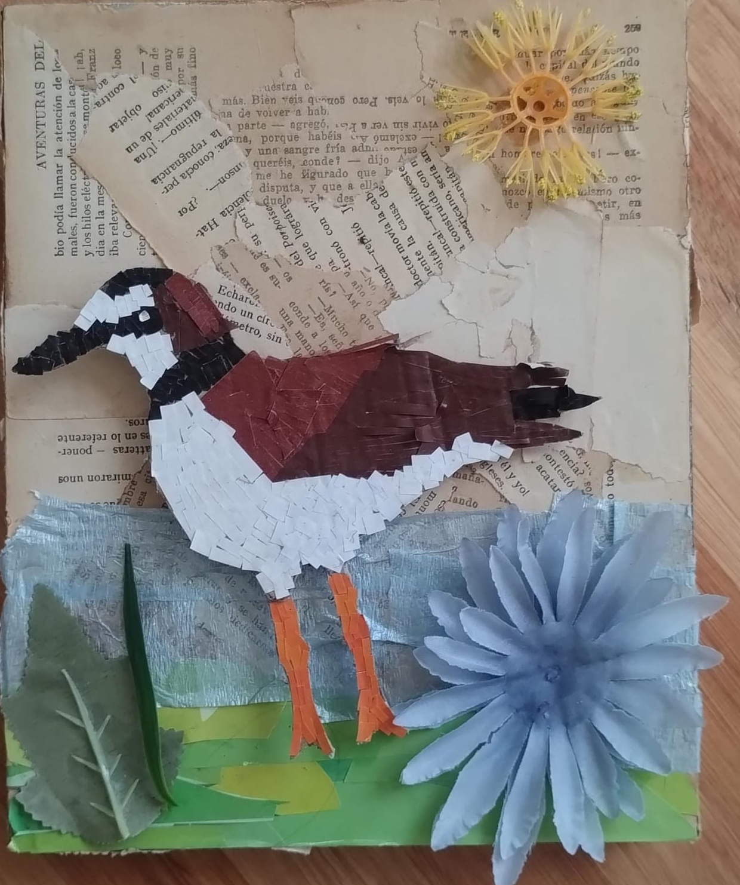
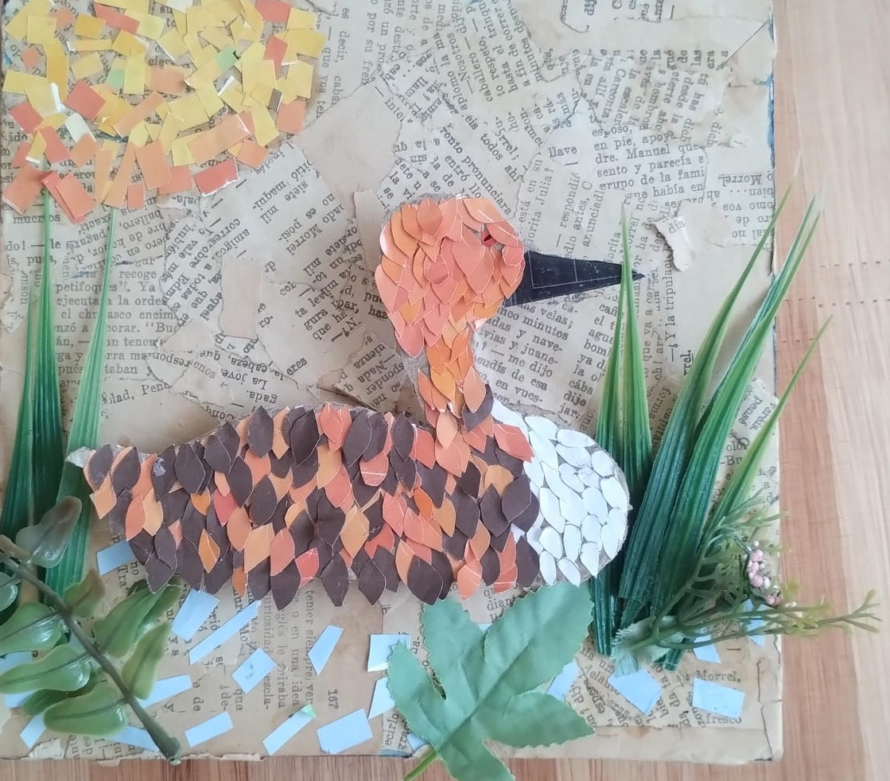
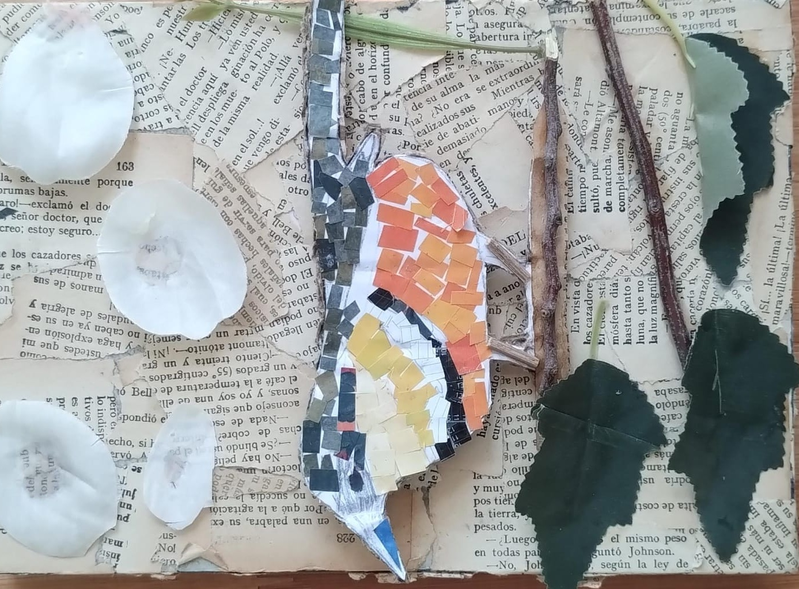
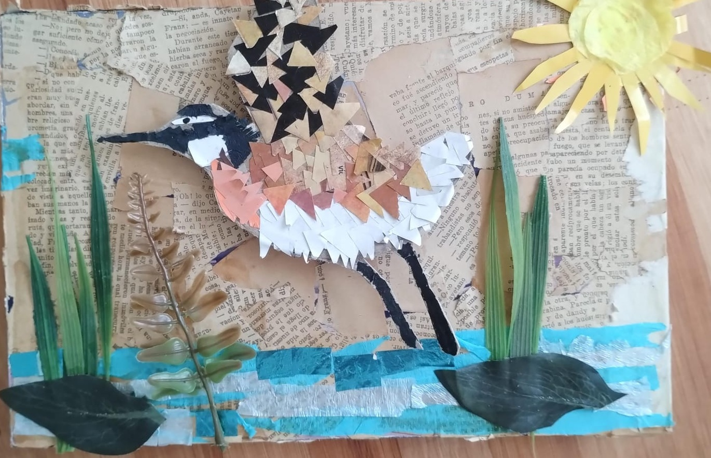
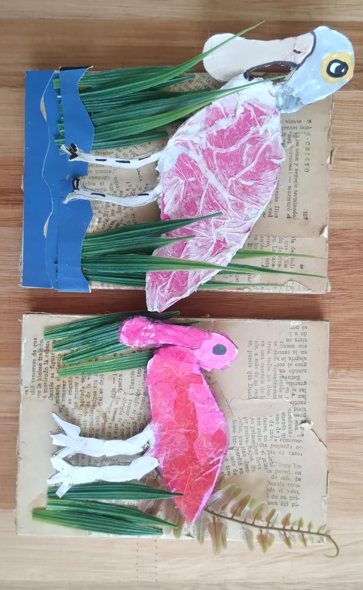
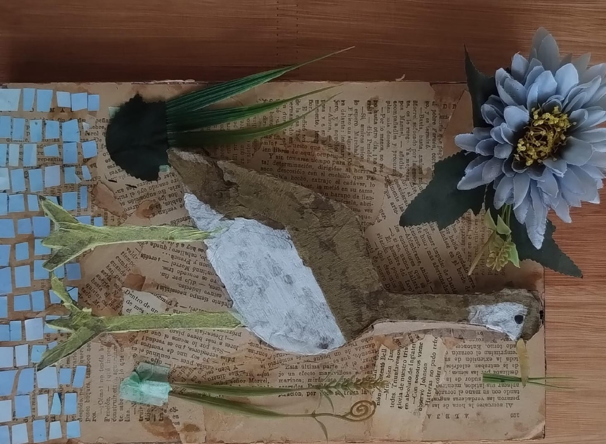
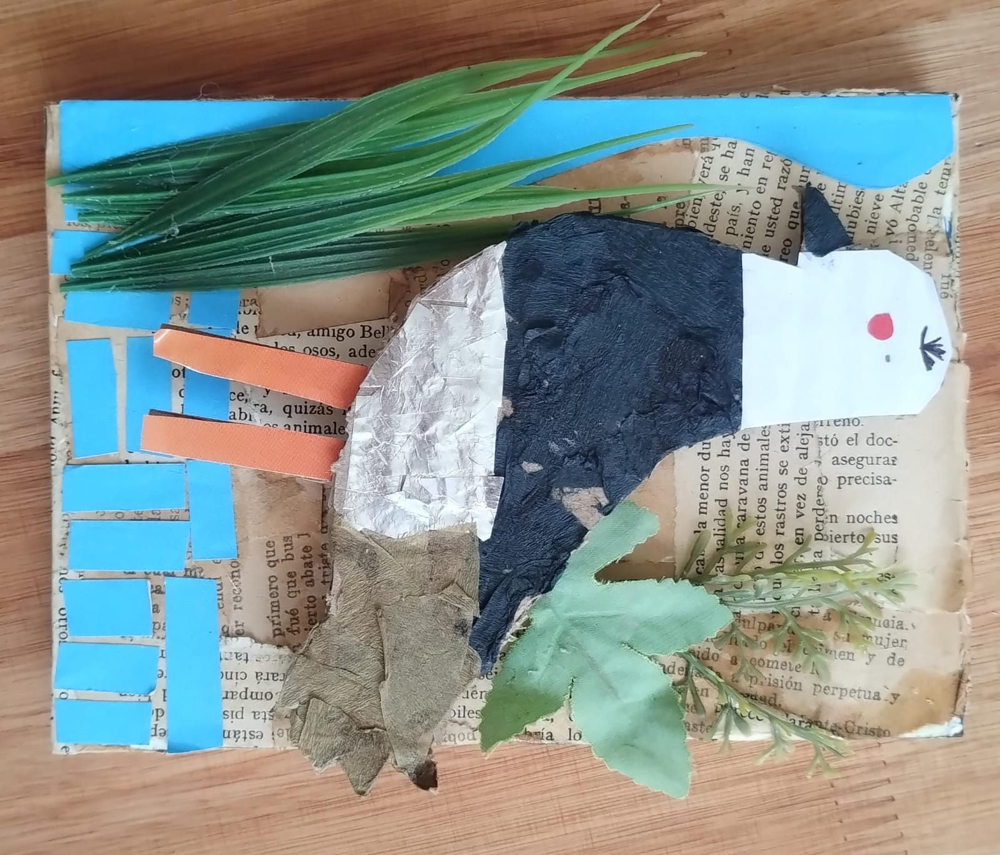

Investigaciones sobre especies
Descripciones de aves de la Laguna Mar Chiquita: características físicas, alimentación, comportamiento, hábitats y grado de conservación.
Un espacio creado por estudiantes de la Escuela ProA La Para para conocer, valorar y difundir la riqueza natural de uno de los humedales más importantes de Córdoba y del mundo.
Conocer el proyecto“Cada ave tiene una historia que contar. Te invitamos a descubrirlas a través del arte, la ciencia y la imaginación.”
Este espacio nace del trabajo y la creatividad de los estudiantes de la Escuela ProA La Para, quienes se propusieron explorar, conocer y difundir la riqueza natural que ofrece la Laguna Mar Chiquita, uno de los humedales más importantes de la provincia de Córdoba y del mundo.
A lo largo de este blog encontrarán representaciones artísticas e investigaciones escolares dedicadas a diversas especies de aves que habitan este ecosistema único. Cada trabajo destaca las características físicas, comportamientos, hábitats y curiosidades de aves emblemáticas del lugar, combinando ciencia, arte y narración para ofrecer una mirada original y educativa.
El objetivo es invitar a la comunidad a descubrir la biodiversidad, valorar la importancia de cuidar los humedales y disfrutar del entusiasmo con el que los estudiantes cuentan datos y detalles fascinantes sobre estas especies.
Los invitamos a recorrer este espacio, aprender, sorprenderse y acompañarnos en este viaje por el maravilloso mundo de las aves de la Laguna Mar Chiquita.
En esta galería compartimos algunas imágenes de las producciones y actividades realizadas por los estudiantes en torno a las aves de la Laguna Mar Chiquita. //HACE CLICK PARA AMPLIAR LA IMAGEN//
|  |  |  |
|  |  |  |
|  |  |  |
Aquí se presentan algunas de las líneas de trabajo realizadas por los estudiantes: investigaciones, producciones artísticas y experiencias de observación de aves.
Descripciones de aves de la Laguna Mar Chiquita: características físicas, alimentación, comportamiento, hábitats y grado de conservación.
Dibujos, pinturas, fotografías y collages inspirados en las aves y en el paisaje del humedal, combinando arte y conocimiento científico.
Historias, cuentos y relatos breves creados por los estudiantes para acercar al público a la vida de estas aves de una manera creativa y emocional.
Estos videos fueron producidos y seleccionados por los y las estudiantes de 1er año, para compartir sus experiencias, investigaciones y producciones audiovisuales sobre las aves del humedal.